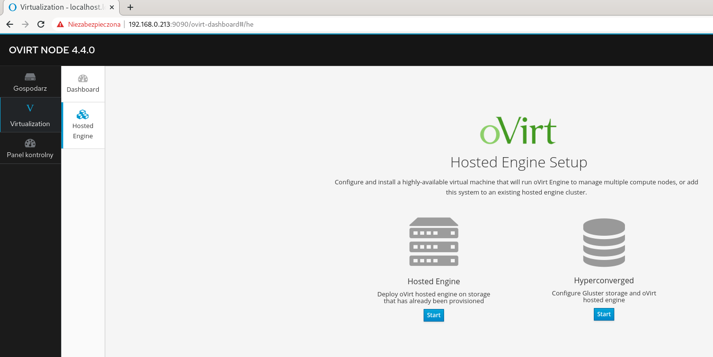

Conversation with 2345422802147713 at czw, 18 cze 2020, 20:02:48 on mateusz.stomski (facebook)
(20:03:13) Mateusz Stomski:
mi przy próbie drugiej instalacji zacina cały interfejs instalatora
(20:03:38) Mateusz Stomski:
prawdopodobnie coś jest popierdzielone po stronie storage bo na tym się zwiesza
(20:52:26) Mateusz Stomski:
nieźle cuduje ten ovirt node na dysku. tworzy partycje osobne pod logi itd. fs=xfs i nie wiem dlaczego ale instalatory ubuntu i centosa sobie z tym nie radzą potem :D
(20:52:56) Mateusz Stomski:
pomogło odpalenie ubuntu w livecd i za pomocą gparted wywaliłem całą tablicę partycji
(20:53:11) Mateusz Stomski:
i potem już instalacja przebiega normalnie
(21:44:57) Tomasz Osławski:
hm to jutro poprobuje, wlasnie na storage sie ovirt wieszal przy reinstali
(21:46:25) Mateusz Stomski:
Sprawdziłem jak się to robi ręcznie na czystym centos... I dużo roboty. Lepiej to faktycznie z ISO zainstalowac
(21:47:12) Tomasz Osławski:
w sumie jak masz od strzala gotowe to czasem nie ma sensu dlubac
(22:57:14) Mateusz Stomski:
Dla potomności
(22:57:26) Mateusz Stomski:
dnf install NetworkManager-wifi
(23:01:14) Mateusz Stomski:
Ale że nie będziesz miał tego w domyślnym repo to najpierw dnf --enablerepo=c8-media-BaseOS,c8-media-AppStream install NetworkManager-wifi
(23:10:17) Michael Grandson:
a propo tych fac faków
(23:10:26) Michael Grandson:
to sa ziomki z zespolu
(23:10:28) Michael Grandson:
(23:10:42) Michael Grandson:
a teraz strzelili cos takeigo
(23:10:46) Michael Grandson:

(23:20:26) Mateusz Stomski:
Żee jak 😀
(23:23:57) Michael Grandson:
no to co ostanio podeslales z ta azjatka
(23:24:06) Michael Grandson:
to widac ze juz jakies apki sa
(23:24:13) Mateusz Stomski:
Sam czaje
(23:24:26) Mateusz Stomski:
Aaa*
(23:24:56) Michael Grandson:
dobrze im to wyszlo :D
(23:59:21) Mateusz Stomski:
trochę przejebane
(23:59:33) Mateusz Stomski:
system dostarcza nowszy NetworkManager niż jest w repo
(23:59:53) Mateusz Stomski:
więc dodajesz repo gdzie jest wtyczka do obsługi WIFI i jej nie zainstalujesz bo jest zbyt nowa
(00:00:31) Mateusz Stomski:
usunięcie za nowego NetworkManagera nie próbuję bo ma dużo zależności - rozjebie sobie ovirta tak
(00:01:00) Mateusz Stomski:
ale po kablu śmiga
(00:01:04) Mateusz Stomski:

(00:02:55) Mateusz Stomski:
no to chyba można sobie darować zabawę
(00:02:57) Mateusz Stomski:
(00:03:10) Mateusz Stomski:
tyle ma dokładnie ten laptop :D
(00:11:03)
Konto zostało rozłączone i użytkownik nie jest już obecny w tej konferencji. Po nawiązaniu połączenia nastąpi ponowne dołączenie.